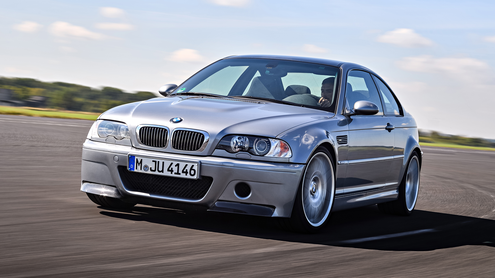
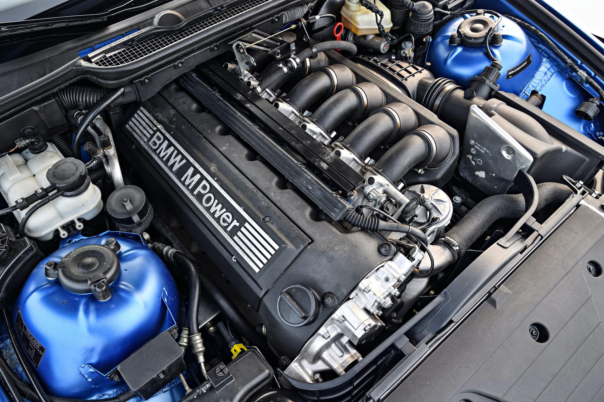
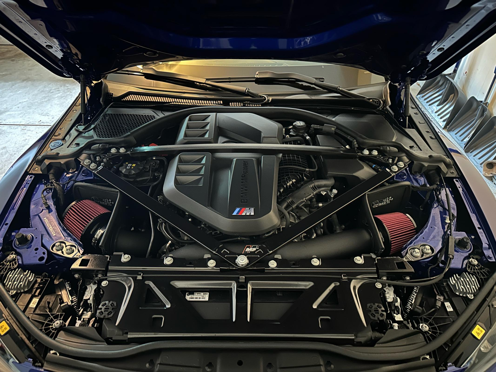
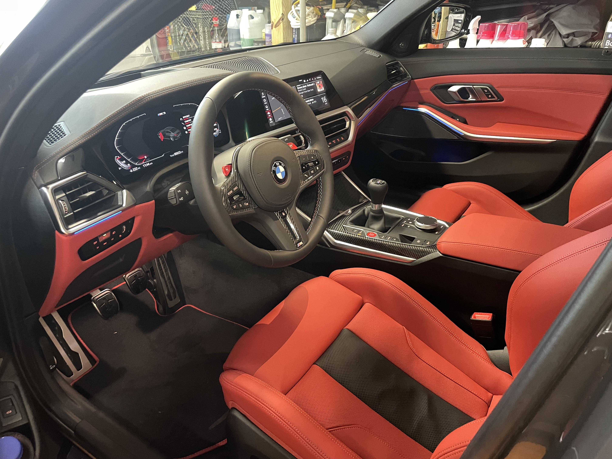

M3 Generations
M3 E30
M3 E36

M3 E46
M3 E90
M3 F80
M3 G80

More About It
The BMW M3 E30 served as the homologation model for the German Touring Car Championship (DTM). But demand for the street version was much higher than the 5,000 units stipulated by the rules. Customers were fascinated by the M10 four-cylinder naturally aspirated engine, whose cylinder head was derived from the legendary BMW M1 engine. In the end, 16,949 of the first M3 were produced. Along with the BMW M3 Sport Evolution, the BMW M3 E30 Convertible is very rare, with less than 800 manufactured.
Naturally aspirated car
TORQUE
230 - 240 Nm
0 to 100 km/h
7.3 - 6.5 seconds
MAX SPEED
235 km/h
Engine S14
In contrast to its predecessor, the second-generation BMW M3 wasn’t primarily developed as homologation vehicle for motor racing. Besides its improved suitability for everyday use, the BMW M3 E36 is known in particular for the powerful sound of its straight six-cylinder engine with high-rev concept. To this end, the M engineers adapted the BMW 3 above all under the bonnet to match the strongly increased performance of the M3. This resulted in fantastic driving performance in an understated chassis – which was enthusiastically received. Even today, the M3 E36 mirrors the Zeitgeist of the 1990s, while its reserved design is timeless.
Naturally aspirated car
TORQUE
286 - 321 Nm
0 to 100 km/h
6.0 - 5.5 seconds
MAX SPEED
250 km/h
Engine S50B32

Strong, fast and beautiful: when the new BMW M3 was launched in 2000, it immediately conquered the hearts of hp enthusiasts. The concept of the high-rev six-cylinder engine was retained. The sound was a winner, but in everyday use the car could also be as quiet as a lamb. Those wanting to enjoy the real power could stay on the gas until 8,000 revs, but didn’t have to. Already at 2,000 the four-valve engine delivered 80% of the maximum torque. The S54 engine also convinced the trade from the start: From 2001 to 2006 it won Engine of the Year. The special edition M3 CSL is today one of the most sought-after M models among collectors.
Naturally aspirated car
TORQUE
365 - 370 Nm
0 to 100 km/h
5.5 - 4.9 seconds
MAX SPEED
250 km/h
Engine S54
The series six-cylinder engine of the predecessor models had reached the end of its development potential for the time being. So, for the first and only time in its history the BMW M3 E90 was granted eight cylinders – and once again the engineers delivered a masterpiece. The S65 engine, based in outline on the V10 from the BMW M5 E60 from 2005, offers the driver a top performance of 309 kW (420 hp) and loves the revs: right up to 8,300 rpm.
Naturally aspirated car
TORQUE
400 - 440 Nm
0 to 100 km/h
5.3 - 4.4 seconds
High-rev concept up to 8,300 rpm
Engine S65 V8

From the fifth generation on, the BMW M3 was only manufactured as a four-door sedan. The technically more or less identical coupés and convertibles were now called M4. The basic model delivered a generous 317 kW (431 hp), while the top performance with the optional Competition package rose to 331 kW (450 hp) and the limited CS model was even more powerful. Lightweight construction again played an important part with the BMW M3 F80. The bonnet for instance was made of aluminium, the roof and the prop shaft of carbon and the strut brace – also of carbon fibre reinforced plastic – weighed just 1.5 kg.
Turbo
TORQUE
550 - 600 Nm
0 to 100 km/h
4.3 - 3.9 seconds
Six-cylinder engine for the first time with exhaust turbo charger
Engine S55
How much motorsport can one sedan handle? The BMW M3 G80, which has been produced since 2020, is testing these limits anew. The model is available with three performance levels, for the first time with M xDrive all-wheel drive, for the first time in a touring version. With the optional M Drivers Package, the top speed rises from 250 to 290 km/h. The BMW M3 G80 is thus once again a sports car suitable for everyday use, whose extremely high driving potential can really only be experienced on the racetrack.
Turbo
TORQUE
550 - 650 Nm
0 to 100 km/h
4.2 - 3.4 seconds
The first available with M xDrive all-wheel drive
Engine S58

